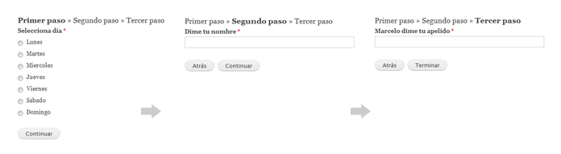
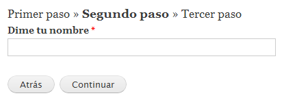
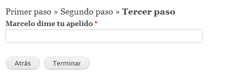

Como hacer formularios multistep (wizard) con Ctools
Chaos tools para muchos no es mas que una dependencia de Panels, Views, Features y muchos otros y fabulosos módulos mas. Pero (Gran pero), Ctools per se es un modulo increíblemente útil para nosotros mismos.
Bueno vamos a lo que vamos. Acá les dejo la idea de lo que vamos a hacer:
Tengo un formulario que necesita recoger tres datos de un usuario, y me parece que es mucha información para pedirla toda junta así que vamos a hacerlo en tres pasos distintos.

Para hacer este wizard vamos a usar un formulario normal pero separado en 3 funciones, y dos de las herramientas (plugins) que tiene Ctools. La primera es obviamente “Wizard” y para la persistencia de los datos entre steps usaremos “object-cache“.
Antes la estructura:
- Necesitamos hacer un item de menú con hook_menu() que nos lleve a una función que es la que va a manejar la batuta.
- 3 mini funciones para manejar “object-cache“
- 3 formularios/funciones para declarar el contenido de cada uno de los step.
Hagamos lo:
Primero: el menú y el callback del menú:
|
1 2 3 4 5 6 7 8 9 10 11 12 13 14 15 16 17 18 19 20 21 22 23 24 25 26 27 28 29 30 31 32 33 34 35 36 37 38 39 40 41 42 43 44 45 46 47 48 49 50 51 52 53 54 55 56 57 58 59 60 |
< ?php function ctools_multistep_menu() { $items['ctools_multistep/example_multistep_form'] = array( 'title' => 'Ejemplo de un wizard con ctools', 'page callback' => 'wizard_callback', 'access callback' => TRUE, 'type' => MENU_CALLBACK, ); return $items; } function wizard_callback($step = NULL) { $form_info = array( 'id' => 'example_multistep_form', 'path' => "ctools_multistep/example_multistep_form/%step", 'return path' => "", 'show trail' => TRUE, 'show back' => TRUE, 'next callback' => 'callback_paso_siguiente', 'finish callback' => 'callback_paso_final', 'forms' => array( 'primer_formulario' => array( 'form id' => 'primer_formulario', 'title' => 'Primer paso', 'include' => drupal_get_path("module", "ctools_multistep") . '/formularios.inc', ), 'segundo_formulario' => array( 'form id' => 'segundo_formulario', 'title' => 'Segundo paso', 'include' => drupal_get_path("module", "ctools_multistep") . '/formularios.inc', ), 'tercer_formulario' => array( 'form id' => 'tercer_formulario', 'title' => 'Tercer paso', 'include' => drupal_get_path("module", "ctools_multistep") . '/formularios.inc', ), ), ); global $user; $object_id = "ctools_multistep_de_ejemplo_" . $user->uid; if (empty($step)) { clean_datos($object_id); $step = 'primer_formulario'; } $object = get_datos($object_id); $form_state = array( 'object_id' => $object_id, 'object' => &$object, ); ctools_include('wizard'); $form = ctools_wizard_multistep_form($form_info, $step, $form_state); return drupal_render($form); } |
Como pueden ver, el item de menú no es mas que una URL normal.
Ahora bien. En la función principal podemos ver como definimos inicialmente un array normalito, y es en el en donde definimos las características del wizard:
‘id’ => ‘example_multistep_form’
id (string) es el nombre que va a tener el wizard y es obligatorio poner uno
‘path’ => “ctools_multistep/example_multistep_form/%step”,
path (url) es la URL que definimos en el hook_menu() mas “%step”. y es la URL que va a usar Ctools para ir poniendo el step actual en la arra de direcciones de nuestro navegador.
‘return path’ => “<front>”
return path (url) es la URL a la que queremos enviar al usuario cuando este haya completado el formulario. en mi caso lo quiero mandar a la home
‘show trail’ => TRUE
show trail (bool) indica a wizard que queremos que se muestre el breadcrumb de cada uno de los pasos.
‘show back’ => TRUE
show back (bool) indica si queremos dejar que un usuario vuelva a pantallas anteriores. si está en TRUE muestra el botón con dicho fin.
‘next callback’ => ‘callback_paso_siguiente’
next callback (function name) indica cual es la función que se debe ejecutar cada vez que pasemos de un formulario al siguiente. y es en esta funcion en la que vamos a ir guardando el estado actual del usuario.
‘finish callback’ => ‘callback_paso_final’
finish callback (function name) indica cual es la función que se debe ejecutar una vez que el usuario haya completado el formulario. Aquí es donde vamos a guardar de forma permanente los datos del formulario y a limpiar los datos temporales.
‘forms’ => array(
‘primer_formulario’ => array(
‘form id’ => ‘primer_formulario’,
‘title’ => ‘Primer paso’,
‘include’ => drupal_get_path(“module”, “ctools_multistep”) . ‘/formularios.inc’,
),
‘segundo_formulario’ => array(
‘form id’ => ‘segundo_formulario’,
‘title’ => ‘Segundo paso’,
‘include’ => drupal_get_path(“module”, “ctools_multistep”) . ‘/formularios.inc’,
),
)
Por ultimo en forms (array) indicaremos cuales son los formularios que se van a usar en cada paso, el titulo que van a mostrar en el breadcrumb y si tuviéramos esta función en otro archivo, la ruta en la que se aloja.
Nos quedan dos cosas en el formulario. La primera es definir el nombre del objeto que va a almacenar de forma temporal los datos del usuario, ver si ver si vamos a reiniciar el formulario (en el caso de que el usuario acceda nuevamente al formulario) e inicializar los datos del usuario (ahora lo explico).
|
1 2 3 4 5 6 7 8 |
< ?php global $user; $object_id = "ctools_multistep_de_ejemplo_" . $user->uid; if (empty($step)) { clean_datos($object_id); $step = 'primer_formulario'; } $object = get_datos($object_id); |
La segunda cosa que nos queda en esta función es claramente generar el wizard:
|
1 2 3 4 5 |
< ?php $form_state = array( 'object_id' => $object_id, 'object' => &$object ); ctools_include('wizard'); $form = ctools_wizard_multistep_form($form_info, $step, $form_state); return drupal_render($form); |
mmmbueeeeno, tenemos declarado el formulario, un par de funciones para el avance y finalización y hacemos uso de clean_datos() y get_datos(). pues eso es lo que sigue. definir estas funciones:
set_datos(), get_datos() y clean_datos() no son mas que unos wrappers que guardan recuperan y eliminan la información que el usuario va rellenando:
|
1 2 3 4 5 6 7 8 9 10 11 12 |
< ?php function set_datos($id, $object) { ctools_include('object-cache'); ctools_object_cache_set('ctools_multistep', $id, $object); } function get_datos($id) { ctools_include('object-cache'); $object = ctools_object_cache_get('ctools_multistep', $id); //creamos un objeto vacío para empezar if (!$object) { $object = new stdClass; $object->dia = NULL; $object->nombre = ""; $object->apellido = ""; } return $object; } function clean_datos($id) { ctools_include('object-cache'); ctools_object_cache_clear('ctools_multistep', $id); } |
Con las pequeñas funciones de object-cache vamos metiendo la información que el usuario complete cada vez que se le de a “Continuar” dentro del objeto:
|
1 2 3 4 |
< ?php function callback_paso_siguiente(&$form_state) { set_datos($form_state['object_id'], $form_state['object']); } |
Y cuando el usuario complete el formulario vamos a usar la función que definimos en “finish callback” para dejarle un mensaje en pantalla al usuario (lo mas lógico seria guardarlos de forma permanente pero esta es una demo XD) y limpiar los datos;


y cuando el wizard nos mande a la home vamos a ver:
Les dejo un descargable con este wizard de ejemplo para que puedan verlo en detalle.
Chau!


¿Qué ocurre con la persistencia de datos en la caché cuando 2 usuarios anónimos simultáneos intentan cubrir el formulario?. Según el código superior, en ambos casos se asignaría el mismo object_id al objeto que guarda los datos del formulario en la caché para ambos usuarios, con lo cuál los datos almacenados serían incorrectos para ambos usuarios, ¿no?. ¿Qué mecanismo proporciona ctools para gestionar estos casos?.
Anda, tenes razón. una solución podría ser setear una cookie con un valor único para cada usuario y usar este valor para armar el $object_id: